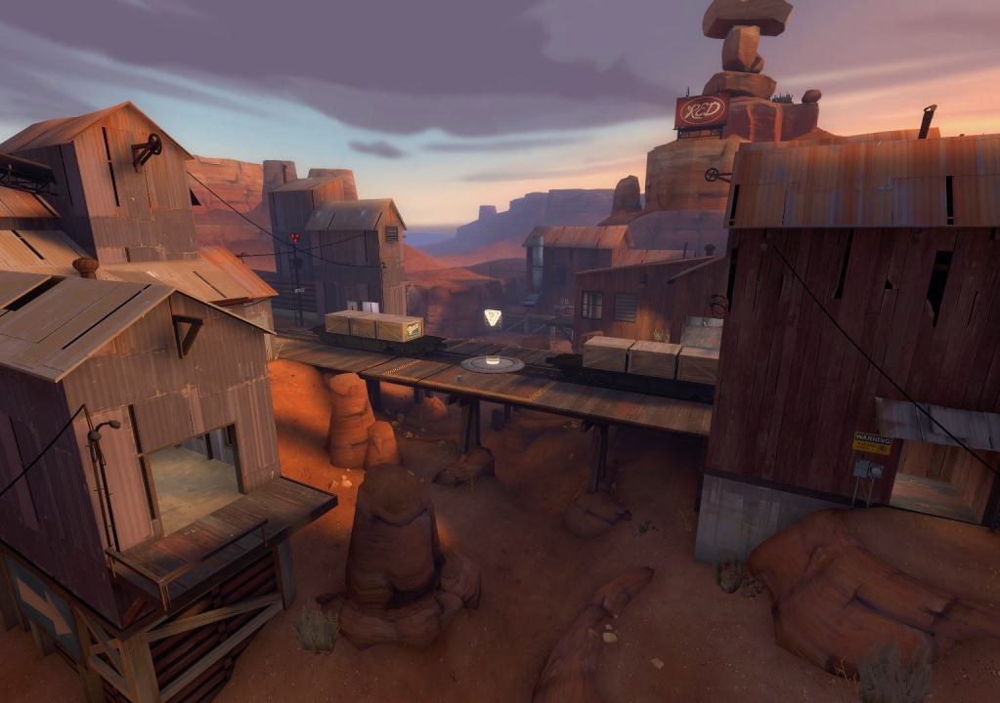
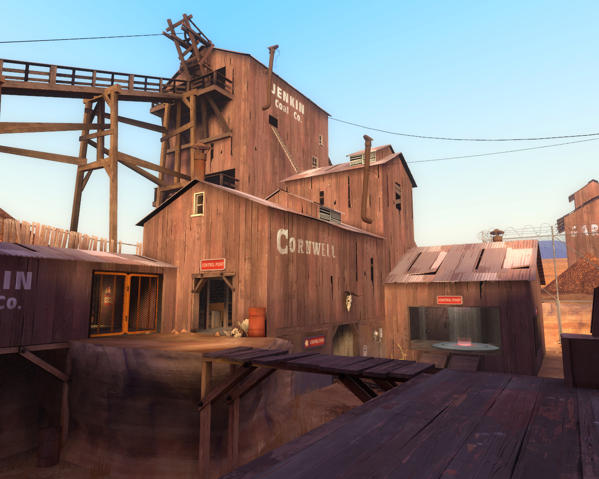

Control Point
Control points are circular platforms with a team-colored light and hologram in the center (neutral points will have
a white light and hologram). To capture a point owned by the enemy team, the player simply stands on the point until the
capture meter fills with his or her team color. The more players on a point, the faster it will capture, though only to a
limited extent.
Scouts, as well as Soldiers/Demomen with the Pain Train equipped, count as 2 players when capturing control
points. Capture progress will not be made when players of both teams are on the control point. If all the capturing players
are killed or driven off before the capture is completed, the capture progress will not reset immediately, but instead will slowly fade away.

The middle point of the symmetrical control point map cp_badlands.
Symmetrical
Standard Control Point, or Linear Control Point, maps play symmetrically. Both teams start with two controlled points, and a central point
starts out neutral. The team that captures all control points wins. Traditional Control Point maps will go into Sudden Death (or Stalemate)
if no team captures all the control points before times runs out. Control points closer to a team's spawn point are captured more quickly
by the enemy team.

One of the many control points RED needs to defend on cp_dustbowl
Attack/Defend
Attack/Defend maps play asymmetrically. RED begins with all the points in their control. BLU wins if it captures all of RED's points. Points
may only be captured in a set order (though some maps, such as Gravel Pit and Steel, may make exceptions). RED wins if it prevents BLU from
capturing all points before the timer expires. Points captured by BLU are typically locked and cannot be captured again by RED.
Attack/Defend maps can come in various styles. Some maps, such as Dustbowl and Egypt, require the BLU team to capture three stages of two
control points each to win the game. If the attacking team fails to win any stage, teams will switch and the defenders will then take turn
to be the attackers, beginning with stage 1. Other maps such as Gravel Pit and Junction allow the attacker to capture two points in any
order (points A or B) before attacking the final point (point C). Steel is a unique Attack/Defend map in that capturing each minor capture
point(points A,B,C and D) will allow better accessibility to the main point (point E), such as allowing more routes into point E or extending
bridges to the point so that classes without special jumps can capture it. Thus means that one unnoticed Scout can capture and win games
without the team even realising.